生成时间：2026-11-10（r7 角色准入修复轮） · 代码基线
main = ea877fa+ 本轮改动 · 环境make platform-up（req 8082 / deliver 8083 / gateway 8080 / web 5173 / MySQLdevops_platform） 本文的权限码与准入格取自PermissionMatrix.java与本轮路由meta.functionCode，可用make access-verify在本机复核（见 §6.3）。先说结论：功能面是齐的，r7 修掉的两条 P0（字典 403、菜单与路由不同源）已交付并有自动化证据，见 §6。
make platform-up # 拉起 MySQL + req + deliver + web，末尾打印 READY
open http://127.0.0.1:5173 # 登录页，租户 t1
make platform-down # 演示结束| 账号 | 姓名 | 角色 | 密码 | 权限码 | 可见需求数 |
|---|---|---|---|---|---|
admin |
平台管理员 | PLATFORM_ADMIN | Admin@12345 |
61 | 12 |
pm |
产品经理-张 | PRODUCT | Passw0rd! |
29 | 12 |
tl1 |
项目域负责人-李 | PMO（域负责人） | Passw0rd! |
44 | 12 |
po1 |
二级企业负责人-王 | SUB_BUSINESS_LEADER | Passw0rd! |
14 | 8（仅本企业提报） |
dev1 |
研发-赵 | DEV | Passw0rd! |
26 | 12 |
dev2 |
研发-钱 | DEV | Passw0rd! |
26 | 12 |
qa1 |
测试-孙 | QA | Passw0rd! |
35 | 12 |
qa2 |
测试-周 | QA | Passw0rd! |
35 | 12 |
vendor1 |
厂商管理员-钱 | PMO + 厂商 VEN-A | Passw0rd! |
44 | 3（仅本厂商承接） |
vendor2 |
厂商研发-郑 | DEV + 厂商 VEN-B | Passw0rd! |
26 | 0（未承接） |
vpm1 ᵈ |
厂商项目经理-冯 | VENDOR_PM + 厂商 VEN-A | Passw0rd! |
13 ᵈ | 3（仅本厂商承接，与 vendor1
同源） |
biz1 ᵃ |
陈业务 | BUSINESS（业务部门） | Passw0rd! |
10 ᵃ | 8 ᵃ |
suite1 ᵃ |
许二级 | SUB_BUSINESS_LEADER（二级企业业务） | Passw0rd! |
14 ᵃ | 8 ᵃ |
ᵃ 本轮新增的两个种子账号。权限码由 PermissionMatrix
推导（node logs/teamflow/tf-mw9yzocw-5kv3pt/scripts/t10-role-grants.mjs，该推导口径已用
admin/pm/tl1/po1/dev1/qa1
六个账号的既有实测值对账通过）；「可见需求数」中 12/8/3/0 由
make platform-demo-reset 的 4
条不变量断言，biz1/suite1 的两个 8 是按 po1
同组织同域口径推导、未被不变量单独断言。
ᵈ r24 新增的第 11
个内置角色演示账号（VENDOR_PM，sys_user_role
恰 1 条，权限行 171 格/租户）。13 = FUNCTION 层 12 个
ALLOW + 1 个
RESTRICTED（trace:view）；ACTION 层另有 7 条
ALLOW（req.action.schedule + 6
个缺陷处理动作），其余 66 条 DENY（其中 11
条为显式覆盖：release.action.create/update/approve/close、task.action.*4
条、sprint.action.create/close、test.action.case_edit）。数字按
PermissionMatrix 与 PRD §3.3/§3.4 推导，实测以授权页
/admin/roles/{id}/permissions 的 168 格为准。
隔离是真实生效的：同一租户下全量角色看到 12
条（make platform-demo-reset
后的干净数据集），po1（二级企业负责人）只看到本企业 8
条，vendor1 只看到本厂商承接的 3 条，vendor2 0
条。
已补齐：
BUSINESS（业务部门）与二级企业业务账号不再缺位。biz1用于演示"业务方自己提报"，suite1与po1同角色（SUB_BUSINESS_LEADER）用于演示"二级企业业务读面"，两者与po1同租户 t1、同组织 supplyOrg，并在种子循环里绑同一组 7 个业务域，故数据范围天然同源。
| 域 | 能力 | 入口页 |
|---|---|---|
| 需求 | 三类需求（BUS/PDR/RD）、三层父子拆解、需求池（入池/待评审/关闭统计）、编号规则、CSV 导出 | /requirements /requirements/:id
/requirements/new |
| 审批 | 自研审批引擎：提报/评审入池/版本/发布四类单据、会签/或签、条件分支、加签/减签、转办/撤回/催办、流程定义（版本化） | /approvals /admin/workflows |
| 版本与发布 | 版本计划（Release）+ 里程碑、发布单、准入校验 9 项（需求全测过/无未关闭 P0·P1/MR/人天/审批/构建/Sonar/制品/门禁）、PMO 强制放行留痕 | /releases /deploy-orders |
| 研发交付 | 任务、迭代看板、MR 区（GitLab 同步）、追溯矩阵（需求→任务→MR→测试→缺陷→发布） | /iterations /traceability |
| 缺陷 | P0–P3、状态机、重开计数、看板、失败转缺陷、生产缺陷回流 | /defects /defects/board |
| 测试 | 用例库（版本化）、用例评审单、测试计划（策略/轮次/执行/分配）、测试报告三签、质量门、豁免、环境台账、执行器健康 | /testcases /test-plans
/test-reports /quality-gates
/test-envs /test-executors |
| 协作（M8） | 甘特（版本/迭代/需求三视图、拖拽改期落库+审计）、Wiki（空间隔离/版本回滚/全文检索/回收站）、价值流（7 阶段、WIP、P90 停留、流动效率、瓶颈） | /gantt /wiki
/value-stream |
| 代码与集成（M7/M8） | 分支策略登记与 GitLab 现状核验（MATCH/DRIFT/UNVERIFIED）、CR 行级评论、Sonar 质量摘要、四系统集成配置 | /code-policies /admin/integrations |
| 平台治理 | 组织/租户/用户/角色/权限矩阵（11 角色 × 61 功能码）、指标字典、审计日志、API 客户端 | /admin/* |
规模：REST 接口 196 个映射、前端 54 个页面、业务表 53 张、验证套件（r1 14 / platform 168 / quality 348 / integration 230 / collab 263 / access 约 85 / negative 25 / unit 234 / lint 16）。
/automation/rules）| 页面 | admin | pm | tl1 | po1 | dev1 | qa1 | vendor1 | vpm1 | biz1 | suite1 |
|---|---|---|---|---|---|---|---|---|---|---|
需求池 /requirements |
✅ | ✅ | ✅ | ✅ | ✅ | ✅ | ✅ | ✅ | ✅ | ✅ |
版本计划 /releases |
✅ | ✅ | ✅ | ✅ | ✅ | ✅ | ✅ | ✅⁵ | ⛔⁴ | ✅ |
审批中心 /approvals |
✅ | ✅ | ✅ | ✅ | ✅ | ✅ | ✅ | ✅⁶ | ✅ | ✅ |
测试计划 /test-plans |
✅ | ✅ | ✅ | ⛔⁴ | ⛔⁴ | ✅ | ✅ | ✅ | ⛔⁴ | ⛔⁴ |
用例库 /testcases |
✅ | ✅ | ✅ | ⛔¹ | ✅³ | ✅ | ⛔³ | ✅⁷ | ⛔¹ | ⛔¹ |
缺陷 /defects |
✅ | ✅ | ✅ | ✅ | ✅ | ✅ | ✅ | ✅ | ✅ | ✅ |
甘特 /gantt |
✅ | ✅ | ✅ | ✅ | ✅ | ⛔² | ✅ | ✅ | ✅ | ✅ |
Wiki /wiki |
✅ | ✅ | ✅ | ✅ | ✅ | ✅ | ✅ | ✅ | ✅ | ✅ |
价值流 /value-stream |
✅ | ✅ | ✅ | ⛔² | ⛔² | ⛔² | ✅ | ⛔² | ⛔² | ⛔² |
追溯矩阵 /traceability |
✅ | ✅ | ✅ | ✅ | ✅ | ✅ | ✅ | ✅ | ✅ | ✅ |
质量门 /quality-gates |
✅ | ✅ | ✅ | ⛔² | ✅ | ✅ | ✅ | ⛔² | ⛔² | ⛔² |
分支策略 /code-policies |
✅ | ⛔² | ✅ | ⛔² | ✅ | ⛔² | ✅ | ⛔² | ⛔² | ⛔² |
用户与角色 /admin/users |
✅ | ⛔² | ⛔² | ⛔² | ⛔² | ⛔² | ⛔² | ⛔² | ⛔² | ⛔² |
自动化规则 /automation/rules |
✅ | ⛔² | ✅ | ⛔² | ⛔² | ⛔² | ⛔⁸ | ⛔⁸ | ⛔² | ⛔² |
¹ po1/biz1/suite1 无
case:manage，用例库入口不渲染，深链落 /403。 ²
角色确实没有该功能码（DENY），入口隐藏且深链 403 ——
这是权限矩阵的正确拒绝，不是故障。 ³ dev1
可见用例库、vendor1 不可见：前者是 DEV 对
case:manage 持
RESTRICTED（收窄数据范围而非拒绝，详见
docs/teamflow/20261110-r7-role-page-access-fix/TECHNICAL.md
§7 记为唯一偏差）；后者是 /testcases 带
meta.internalOnly，厂商账号深链一律落
/403?code=INTERNAL_ONLY。该结论自 r24 起只对非
VENDOR_PM 的厂商账号成立（见 ⁷）。 ⁴ 5 格 ⛔ 与
§6.2 同一张表：/test-plans 要
plan:manage（po1/dev1/biz1/suite1
无），/code-policies 要
CCODE_POLICY_VIEW（pm/po1/qa1
无），/releases 要
release:plan（BUSINESS
未授）。矩阵未新增任何权限码。 ⁵ 厂商账号的版本列表会是空的（r24
起，预期，不是故障）：版本可见性由 ScopeSql
的派生谓词决定 ——
EXISTS(SELECT 1 FROM release_requirement rr JOIN requirement r ON r.id = rr.requirement_id WHERE rr.release_id = release.id AND (r.owner_vendor_id = :vendor OR r.assignee_vendor_id = :vendor))，即「版本里必须含本厂商承接的需求」才可见。演示夹具里唯一的版本
2026 Q4 只含 8 条内部需求（VEN-A 的 R-09/R-10/R-11
都还没排进版本），所以 vendor1 的版本列表从 1 条变成 0
条、vpm1 也是 0 条 ——
这是「严格按本厂商需求派生」的正确结果。想让版本页有内容，就用
pm 把 R-09 排进该版本，或用
scripts/platform-test-negative.sh 里的 VEN-A
版本夹具；不要为此放宽谓词（放宽就等于让厂商看见别家的版本）。详情与写口共用同一条谓词，他厂商版本详情一律
403 OUT_OF_SCOPE。 ⁶ me.approvals 不是
MenuRegistry 页面（无 MENU 行、路由无
internalOnly），它是所有账号的个人待办中心，vpm1
仍可打开自己的待办；但 approve/review_*
等审批动作全部 DENY，点了就是 403。这与
PRD AC-10 的字面「me.approvals
不渲染」有出入，已记为口径修正 C2（见
docs/teamflow/20261116-r24-vendor-pm-role/TECHNICAL.md
§0）。 ⁷ VENDOR_PM 是用例库
internalOnly 的唯一例外（r24 定点取代 r7
AC-5）：路由 meta.vendorPmAllowed + 导航
vendorPmAllowed + 深链守卫三处同源，仅当角色码含
VENDOR_PM 时放行；其余 vendorId != null
的账号（vendor1/vendor2）维持 ⛔ 与
/403?code=INTERNAL_ONLY。例外只开「进入页面看」：导入/新建/复制/删除/保存新版本全部由
test.action.case_edit 关掉，用例数据本身仍由
test_case.vendor_id 经 ScopeSql 收敛。
⁸ 自动化规则页对厂商账号一律
INTERNAL_ONLY（r39）：vendor1
的角色是 PMO，角色矩阵里 automation:manage 是
ALLOW，所以这一格不是「权限不够」；拦截发生得更早——AutomationInternalOnlyInterceptor
以 order(-100) 注册（PermissionInterceptor
是默认 0），对任何 vendorId != null 的账号直接 403
INTERNAL_ONLY。vpm1（VENDOR_PM）与
vendor2（DEV）角色层本来也拒绝，服务端仍先回
INTERNAL_ONLY（更早的闸先说话）。导航隐藏与深链 403
同源：/automation/** 的路由
meta.internalOnly。
判据是两段同源：菜单看
navVisible()，路由看meta.functionCode，nav的码是meta的码的子集，故"看得见"与"点得开"不会再分叉（§6 P0-2）。
口径补充（r8）：
/code-policies一行的 ✅ 只表示路由准入通过；页内「核验」能否发起还取决于可选能力integration:manage的探测结果。dev1属"准入通过、能力不可读"：页面停留、表格照常渲染、常驻黄条说明原因（§4.5、§7.2）。不要把 dev1 的 200 当成"页面全可用"。
admin（可走通全流程的角色）http://127.0.0.1:5173/requirements：看 12
条、类型 Tab、筛选与 CSV 导出。/releases → 打开版本详情（工作项、准入 9
项清单、状态计数胶囊）。/test-plans → 计划详情六
tab（生命周期/用例/轮次/执行/报告/风险）；执行页勾结果。/quality-gates → 单版本质量门详情（报告结论、5
条规则、豁免、快照回放）。/gantt →
切版本/迭代/需求三视图与日/周/月；拖拽右端改期（落库 + 审计 + 超父窗口
409 确认）。/value-stream：7 阶段 WIP、P90
停留、瓶颈阶段、流动效率（数据全部取自 audit_log）。/wiki：建空间（可见范围
继承/仅本域/仅本厂商）、写页、看版本对比与回滚、回收站。/code-policies：登记规则 → "对照核验" GitLab
现状（未配置集成时 必须显示 UNVERIFIED，不得假绿）。/admin/users、/admin/permissions（11×61
权限矩阵）、/admin/audit（审计日志）。pm（权限
26）/requirements、/releases、/approvals、/testcases、/defects、/gantt、/wiki、/value-stream、/traceability、/quality-gates、/admin/workflows。/test-plans、/code-policies、/admin/users。/workbench
目前是质量工作台（待批准计划/待会签报告/待审批豁免/我的待执行用例），实测
pm 待会签 6 份 —— 这是 M6 的岗位化视图，不是 PRD §4.10
那张"待办四宫格"。tl1（权限 40，PMO 视角）po1（权限 11，隔离演示的最佳角色）/requirements 只返回本企业 8
条（隔离生效），页面已可直接打开；也可用 API 复核：
TOKEN=$(curl -s -X POST http://127.0.0.1:8080/api/req/auth/login -H 'Content-Type: application/json' \
-d '{"tenantCode":"t1","username":"po1","password":"Passw0rd!"}' | jq -r .token)
curl -s -H "Authorization: Bearer $TOKEN" -H 'X-Tenant-Id: 1' \
'http://127.0.0.1:8080/api/req/requirements?page=1&size=5' | jq '.total' # → 8dev1 /
dev2（权限 24）/code-policies 实测（r8 修复后 ·
2026-11-10）：dev1 打开后 URL 仍为
/code-policies（不跳
/403），策略表格渲染 2
行（demo-group/demo-project、demo/supply-chain-platform），页面顶部常驻黄条：「当前账号无法读取
GitLab 集成配置（需
integration:manage），核验结果将保持「未核验」；如需核验请联系集成管理员。」CCODE_POLICY_VIEW）与能力可读（integration:manage）是两件事。dev1
只有 VIEW、没有 EDIT 也没有
integration:manage，所以「核验」按钮置灰、页面不会发核验请求，列表里的「未核验」是权限原因、不是"没配置"——页内黄条与行内
pill 都不得说成「未配置/未启用」。dev1 打开该页 200
只证明准入通过，页面可用与否以本条 + 截图为准。vendor2 用于演示厂商 0 承接：用它的 token 调
/requirements 返回 total=0。qa1 / qa2（权限
33，权限最完整的业务角色）/testcases：建用例、发起用例评审（绑
case_version，改版自动 INVALIDATED）。/test-plans：计划七态、轮次
R1/R2/R3、执行结果四态、通过率/覆盖率。/test-reports：生成 →
三签（测试负责人→产品→PMO）→ 带水印导出。/quality-gates：报告 PASS 且 7 天内、通过率
≥95%、未关闭 P0/P1=0、第 5 规则（Sonar/制品/构建）。/test-envs、执行器
/test-executors（外部 CI 上报的健康状态，24h 在线 / 72h
陈旧）。/traceability：按缺口筛选（需求没用例、用例没执行、缺陷没关联）。vendor1（PMO +
VEN-A，演示域×厂商双维度隔离）/requirements 总量 3（只本厂商承接）、缺陷
3；甘特、Wiki、价值流、质量门、追溯可用。internalOnly），管理后台按矩阵不可见：这是本次修复让"厂商账号只能待在厂商面"的入口级证据。r24
起唯一例外是第 11 个角色 VENDOR_PM（见
§4.9），vendor1/vendor2 维持不可见。biz1 / suite1（权限 8 /
11，本轮新增账号）biz1（BUSINESS）：可提报业务需求（req:report:bus）、看本组织需求池（8
条）、审批待办、缺陷、甘特、Wiki、追溯矩阵、质量指标。biz1 列一致。suite1（SUB_BUSINESS_LEADER）：在 biz1
基础上多 release:plan（受限）与
req:review，故版本计划可打开、可参与评审。make access-verify
的 a4 段断言关键隐藏项）。vpm1（r24 新增第 11
角色，本厂商交付的只读驾驶舱 + 排期扳手）VENDOR_PM + 厂商 VEN-A，密码
Passw0rd!；一个账号恰 1 条角色绑定，171 格授权（授权页
/admin/roles/{id}/permissions 可逐格看）。req.action.schedule。在需求池里对一条可排期需求点「排期」→
进版本，allowedActions 只含
schedule；同一条需求上看不到「评审通过」「分解」「指派厂商」（这些按钮的显示条件读
ACTION 快照，不读 req:review/req:split
等功能码）。vendor1
的差异对照（演示最省时间的一组对照）： | 维度 |
vendor1（PMO + VEN-A） | vpm1（VENDOR_PM +
VEN-A） | |---|---|---| | 用例库 | ⛔
/403?code=INTERNAL_ONLY | ✅
只读进入（vendorPmAllowed 例外），写按钮全关 | |
版本新建/编辑/审批 | ✅（PMO 有 release.action.*） | ⛔
按钮不渲染、接口 403 | | 需求评审/分解/指派厂商 | ✅ | ⛔ | | 缺陷处理 /
排期 | ✅ / ✅ | ✅ / ✅（唯一写动作） | | 用户与角色管理 | ⛔ | ⛔
|vendor1 与
vpm1 的需求/缺陷/任务条数相同（都只含
VEN-A），差别只在「能不能写」——这正是「厂商侧项目管理岗 ≠ 缩小版
PMO」的现场证据。vpm1
是空的（预期）：演示夹具唯一版本 2026 Q4
只含内部需求，严格派生下厂商账号的版本列表为 0
条。要向观众展示「厂商也能看版本」，先用 pm 把 R-09
排进该版本，再看 vpm1 的版本列表出现 1
条；这是夹具特性，不是权限缺陷（机制见 §3 脚注
⁵）。同期去点他厂商版本的详情 URL，会拿到 403 OUT_OF_SCOPE
—— 空列表 + 详情 403 一起讲，才是完整的「按本厂商需求派生」。pm 排 R-09 进版本 → ② vpm1
登录看侧栏与需求池 3 条 → ③ 点「排期」成功 → ④
点版本详情看只读、无「编辑/审批」→ ⑤ 手输 /testcases
进入只读页（写按钮灰）→ ⑥ 退出，换 vendor1 手输
/testcases 得 403 —— 六步 3 分钟讲清「角色化 vs
归属化」的区别。tl1（PMO 域负责人）或
dev1（研发）——复用
req.action.deliver；pm
只能审不能提（这是 r26 的既定口径，演示时别让 pm
去点「提交评估」，会 403）。tl1）或产品经理（pm），任一人通过即生效；允许发起人自审（小团队兼角，靠审计留痕）。schedule（PDR 排期）与
start_dev（RD 开始开发）在评估未通过时一律 409
ESTIMATE_NOT_APPROVED，detail 三键
{requirementId,status,required}。STALE、门重新生效；allowedActions
同步清空。pm 打开一条未评估的 PDR 详情 →
按钮写着「排期」但置灰，悬停提示「需先通过工时评估（当前评估单：无）」；tl1 在需求详情「工时评估」卡片填 6.5 天并提交 →
pm 在审批中心看到「工时评估」待办并通过；pm 刷新 → 「排期」可点；tl1 把该需求人天改成 8.0（+23%）→ 再回
pm：「排期」又置灰，提示变成「已失效（STALE）」——说明这道门不是一次性开关。需要权限：<码>，门未满足是「需先通过工时评估（…）」，都来自
estimateGateTip
一个函数；演示时故意点一次置灰按钮，页面不跳
403、不发请求。r26 起，剧本里凡涉及「排期」或「开始开发」的步骤，都要先过 §4.10 的工时评估门；干净重置后夹具已给 11 条非 BUS 需求批好评估单，直接演不会卡住。
| 步 | 账号 | 动作 | 预期 |
|---|---|---|---|
| 1 | biz1 |
提报业务需求 | 进入"待评审"，触发"产品评审"会签待办 |
| 2 | pm |
产品评审会签通过 → 入池 | 状态 待评审→已入池，集团需求池可见（仅标题/摘要/域/版本） |
| 3 | pm |
拆解产品需求 + 研发需求 | 父子链路建立，父需求完成率开始汇总 |
| 4 | pm |
排入 2026 Q4 版本 | 版本详情出现工作项，甘特出现计划条 |
| 5 | dev1 |
交付：填 MR、预估/实际人天 | 需求→待测试，追溯矩阵出现 MR 节点 |
| 6 | qa1 |
执行测试计划 → 失败转缺陷 | 缺陷带用例/版本/需求；计划通过率下降 |
| 7 | qa1 |
缺陷修复后复测 → 生成测试报告 → 三签 | 报告 PASS，质量门变绿（含 9 项准入） |
| 8 | tl1/pm |
提交发布单 → 准入校验 | 9 项逐项展示；FAIL 禁提交，PMO 放行留痕 |
| 9 | admin |
甘特看交付节奏 / 价值流看瓶颈 | 停留时间与审计事件一致，三处读数差 0 |
步 2 的审批人是
PRODUCT角色（种子流程"产品评审"单节点 ALL 会签），即pm，不是po1—— 旧版剧本把审批人写成po1是笔误，本轮改正。
pm 打开
/requirements、/releases、/approvals、/test-plans、/code-policies
都落到"无权访问该单据（需要功能码 FORBIDDEN）"；根因是页面加载时调
/api/req/admin/{domains,vendors,users}
取显示名，这三个接口要 org:manage，非管理员 403，而
web/src/api/client.ts 对任何未声明
silentForbidden 的 403 做全局
navigate('/403')。GET /api/req/dictionaries/{domains,vendors,users}（仅认证、按
DataScope 裁剪租户/厂商边界、record
形状固定字段白名单，故意不进 PermissionRouteTable
并用单测钉住）；前端字典读取统一收敛到单入口
web/src/api/dictionaries.ts（各业务页不再直连
api/admin.ts），全部声明 silentForbidden
并在内部降级。管理面 /admin/* 的 org:manage
语义不变。a0（字典契约 29
断言：401/200/字段白名单/404/管理面仍 403）+ a1（裁剪与隔离
8 断言）。修复前现象：po1 能看到"用例库"却点开
403；dev1 有 CCODE_POLICY_VIEW 却在分支策略被
403；pm 顶栏看到"设置"点开 403（特判含
workflow:manage 却落 /admin/orgs，需
org:manage）。
修复：新增 web/src/layouts/navAccess.ts 的
navVisible()
作为侧栏与顶栏唯一准入判定；NavItem.functionCode
改为必填（33 条侧栏 + 8 条顶栏逐项赋值，登录可读用
AUTHENTICATED 哨兵）；5 条路由 meta 补齐并保证
nav 码 ⊆ meta 码；/testcases 加
meta.internalOnly（厂商账号入口级 403，不改权限矩阵）；删除
TopNav.vue 的 admin 内联六码特判。
5 格 ⛔（7 角色 × 5 页探测矩阵内）与本轮定性：
| 页面 | ⛔ 角色 | 触发码 | 定性 |
|---|---|---|---|
/test-plans |
po1 dev1 |
plan:manage |
矩阵拒绝，符合 AC-5 |
/code-policies |
pm po1 qa1 |
CCODE_POLICY_VIEW |
矩阵拒绝，符合 AC-5 |
| 其余 30 格 | — | — | 200，入口与接口同源放行 |
验证：a2（5 页 × 7 角色 35 条精确状态码）+
a3（导航静态审计：码必填/值域/nav⊆meta/前缀/silentForbidden/客户端
403 守卫）+ a4（7 角色真实权限推导可见集）。
make access-verify # a0..a4 五段聚合，PASS==TOTAL 才退出 0；栈未起非 0 退出
bash scripts/tests/access/a0-dictionary-contract.sh # 只跑字典契约
bash scripts/tests/access/a1-isolation.sh # 只跑租户/厂商裁剪
bash scripts/tests/access/a2-page-matrix.sh # 只跑 5 页 × 7 角色状态码
node scripts/tests/access/a3-nav-audit.mjs # 只跑导航静态审计（不需起栈）
node scripts/tests/access/a4-nav-visibility.mjs # 只跑角色可见集推导（不需起栈）DELIVERED-MODULES.md:96-98
把岗位工作台（待办中心 + 快捷动作 + 数据卡片 +
我的列表）和自助报表（拖拽交叉表 → 图表 →
保存/共享/导出）列为已交付；实际代码里 /workbench 是 M6
的质量工作台（WorkbenchQuery
只有计划卡/用例卡/汇总），也没有任何 /reports
路由与报表接口（report_definition 表/接口 0 命中）。s1/s5/s7/neg-sm-*
夹具，人天出现 614 天；甘特首屏 88 行也是夹具（大量"逾期"）；通知
99+。make platform-demo-resetPOST /api/req/internal/demo-reset（需
X-Internal-Token，且 PLATFORM_SEED_ENABLED
关闭时端点不存在），重建 12 条需求小链路 + 1 版本 + 1 迭代 + 12 用例 + 3
缺陷 + 1 测试计划 + 1 甘特组 8 行 + 4 条种子通知 + 2
条自动化规则（§9），并自检 4 条不变量（需求 12 / po1 见 8 /
vendor1 见 3 / vendor2 见
0）与夹具痕迹清零；不进自动门禁，属演示前手动动作。
口径（r39 Q-5）：重置脚本断言的 4 是"种子通知"，即重置事务（Tx1）写完的计数；紧接着的 Tx2/Tx3 会跑一遍演示审批链，再产生 22 条
APPROVAL/APPROVAL_RESULT通知，所以重置后直接SELECT COUNT(*) FROM notification看到的是 26，这不是回归、也不是种子多写了。要复核种子数就看自检输出里的那 4 条，不要用全表行数。
biz1/suite1（§1）。截图都在 docs/teamflow/demo-shots/（1440×900，headless
Chrome + CDP 注入会话）。
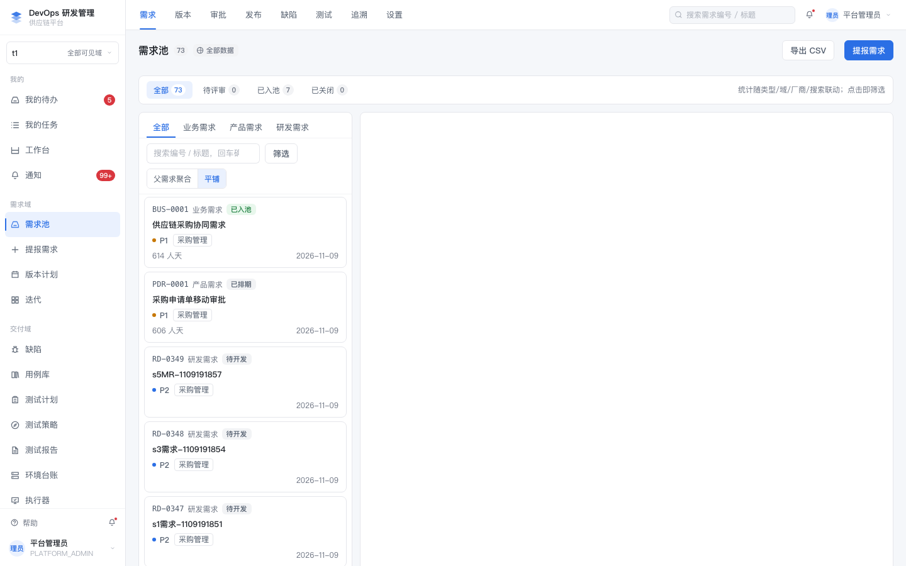 需求池：类型 Tab、父子聚合/平铺、CSV 导出 |
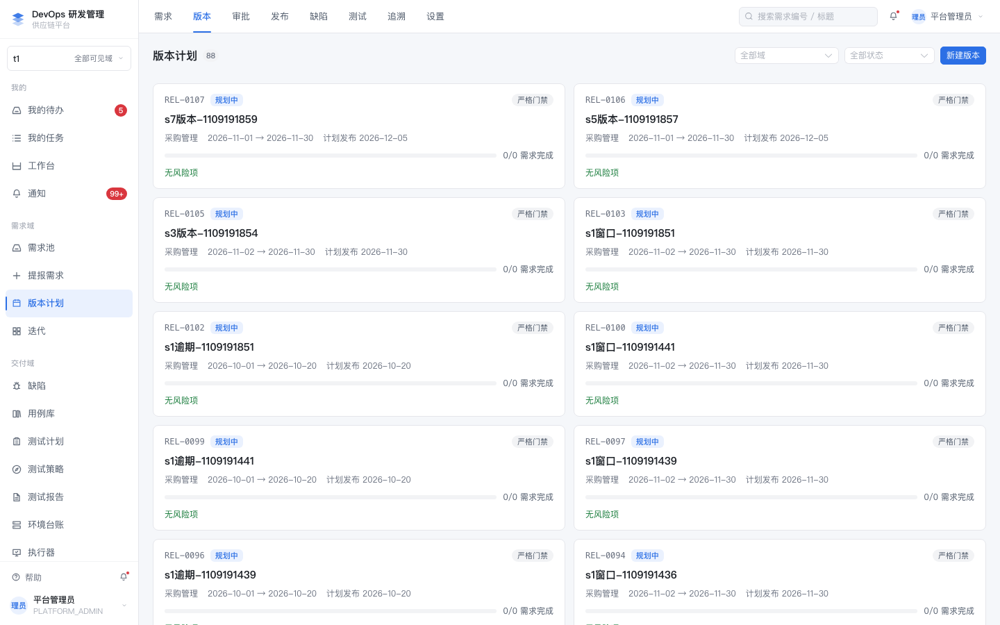 版本计划 + 里程碑 |
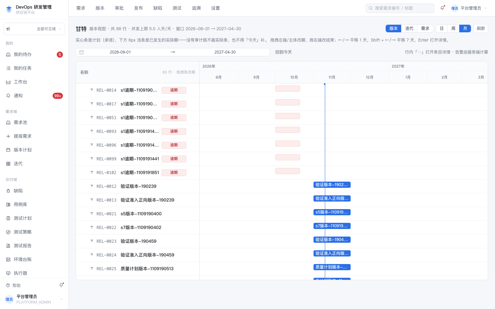 甘特：版本/迭代/需求三视图、拖拽改期、逾期标红 |
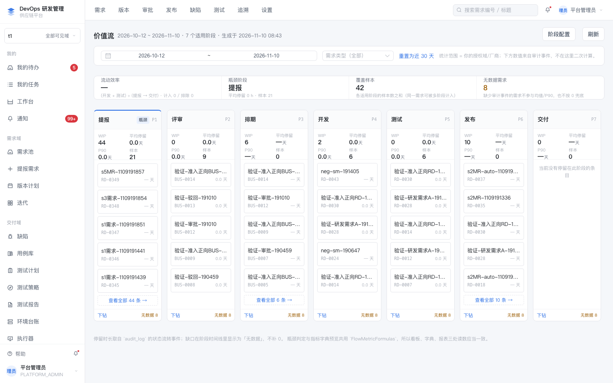 价值流：7 阶段 WIP、P90 停留、瓶颈阶段 |
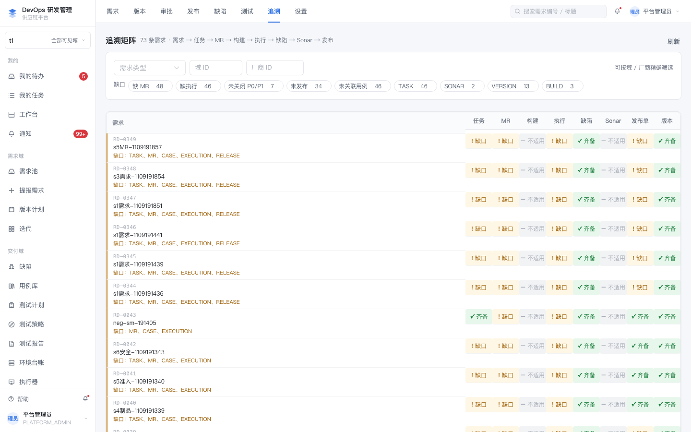 追溯矩阵：需求→任务→MR→测试→缺陷→发布 |
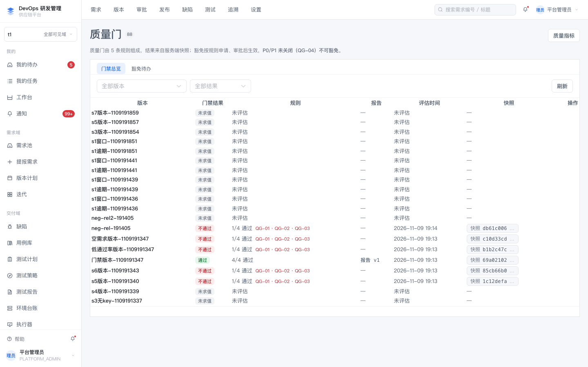 质量门总览 |
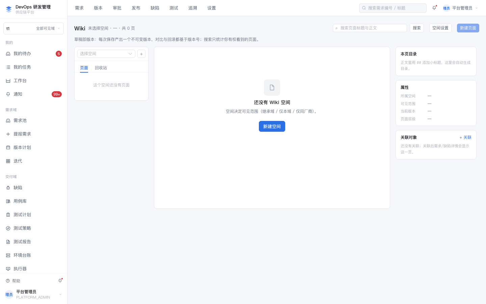 Wiki：空间/页面树/版本 |
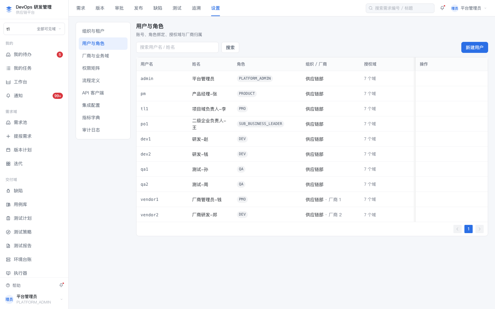 用户与角色（11 角色 × 61 功能码） |
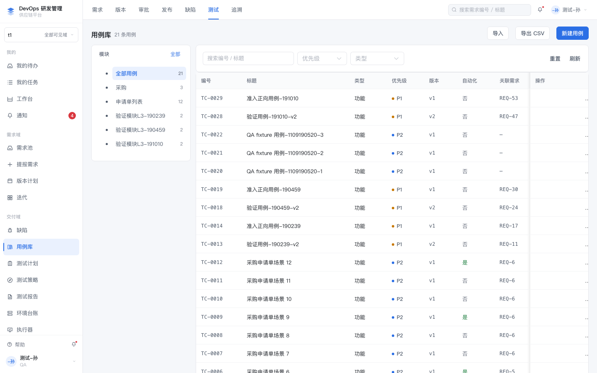 qa1：用例库（版本化、评审状态） |
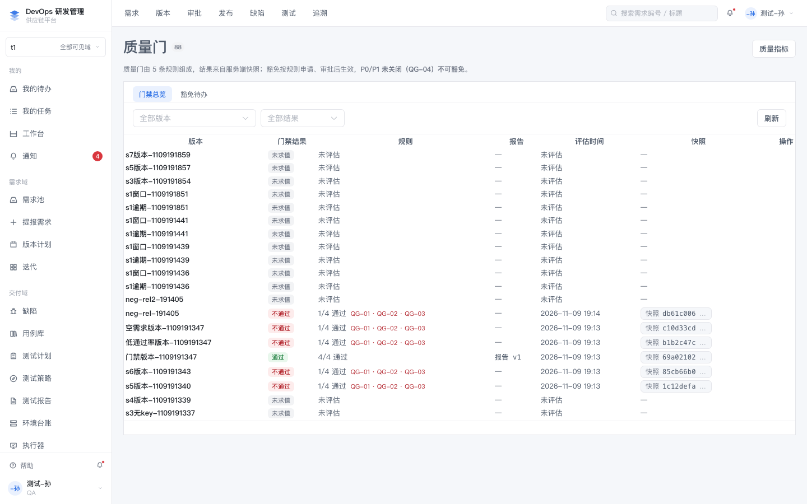 qa1：质量门（报告/规则/豁免） |
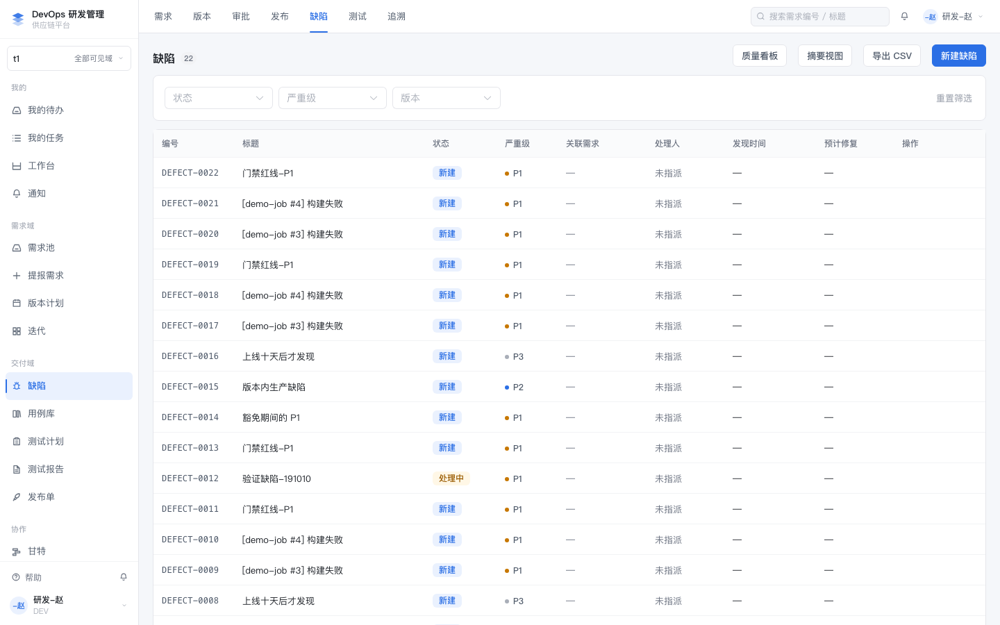 dev1：缺陷列表 |
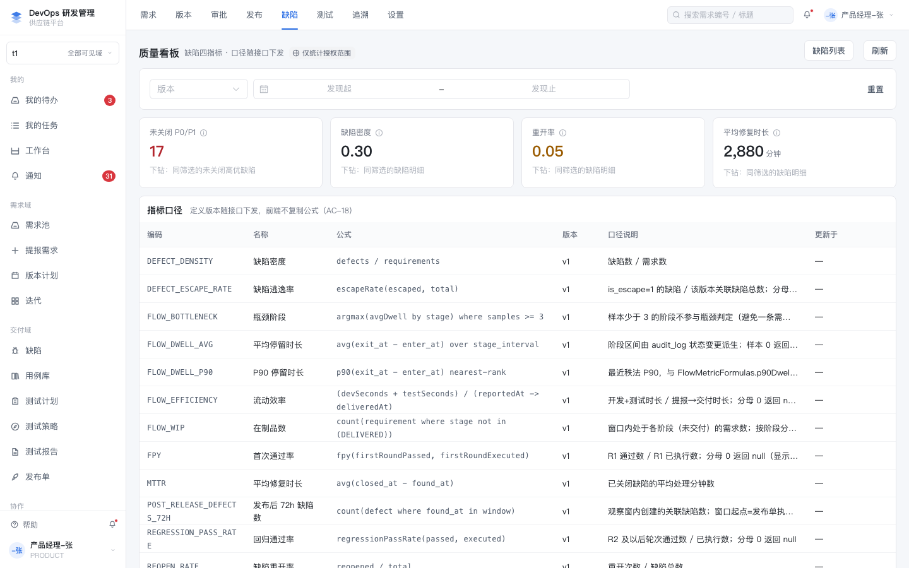 pm：缺陷看板 |
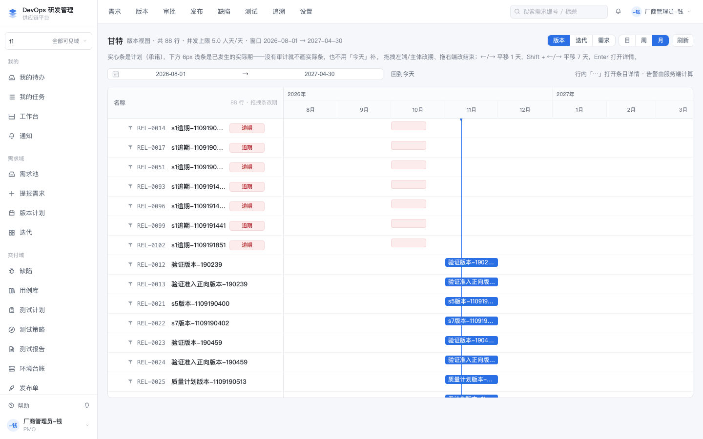 vendor1：甘特（只见本厂商承接） |
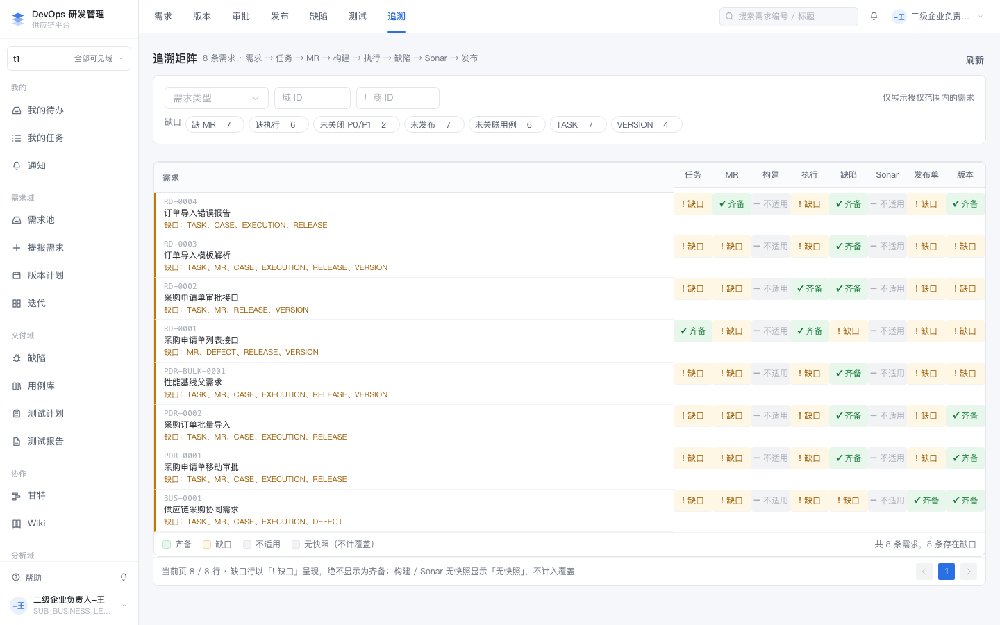 po1：追溯矩阵（二级企业视角） |
r8 新增：dev1 打开分支策略（修复后）
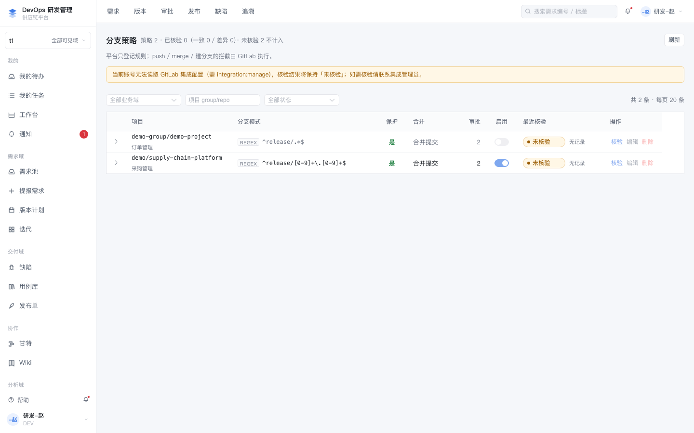
dev1（DEV，26 权限码）打开 /code-policies
的实测：URL 停在 /code-policies、筛选器与表格正常渲染 2
行、顶部常驻黄条写明「当前账号无法读取 GitLab 集成配置（需
integration:manage）」，行内 pill
为「未核验」。这张图是页面级证据：状态码 200
证明不了表格真的挂载、也证明不了黄条说的是权限原因。取证脚本
logs/teamflow/tf-mwa402ox-br1nqs/scripts/shot-dev1-code-policies.mjs（12
条断言：停留 / 无整页错误 / 表格 ≥1 行 / 黄条三关键词 / 禁词 /
1440×900）。
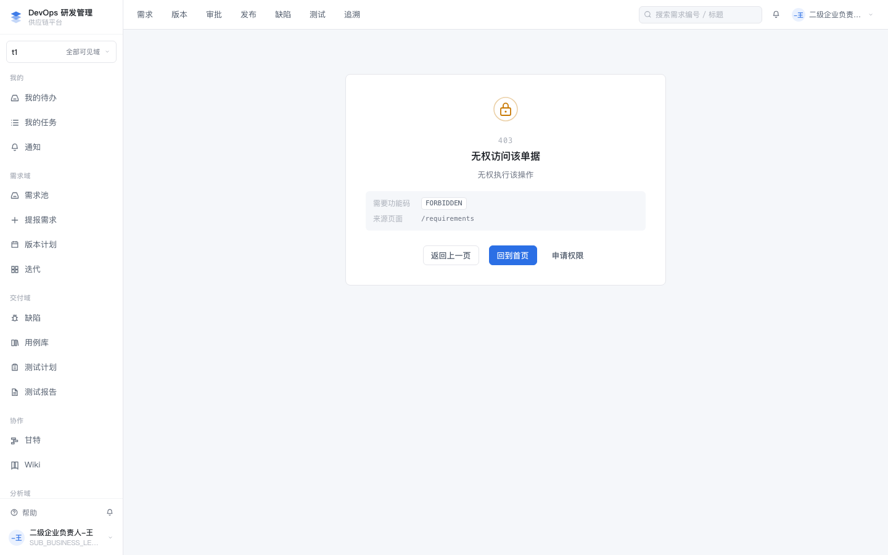
这张图是 r7
修复前的故障态，保留作对照：二级企业负责人
po1 打开 /requirements 直接落到全局 403
页（根因见 §6.1）。修复后 po1 打开需求池为 200 且看到 8
条，由 make access-verify 的 a2（状态码）与
a4（可见集）持续断言；页面级证据请按 §7.4 现截。
make platform-up
make platform-demo-reset # 干净演示数据（12 需求 / po1 见 8 / vendor1 见 3 / vendor2 见 0）
"/Applications/Google Chrome.app/Contents/MacOS/Google Chrome" --headless=new --no-sandbox \
--remote-debugging-port=9222 --user-data-dir=/tmp/chrome-cdp about:blank &
# CDP：Target.createTarget → attachToTarget(flatten) → Page.navigate(/login)
# → Runtime.evaluate 写 sessionStorage.setItem('devops.session', <登录响应>)
# → Page.navigate(目标路由) → Page.captureScreenshotDELIVERED-MODULES.md 改成"设计已定、未排期"（本轮按 PRD
非目标处理，未动）。/testcases 对
dev1 可见源自 DEV 对 case:manage
的 RESTRICTED（收窄而非拒绝）。若产品要求 dev1
不可见，需改权限矩阵，属独立需求。一条规则 = 触发事件 + 条件 +
动作，可启停、有执行日志、能防循环。动作只有 4 类（通知 /
指派负责人 / 打标签 / 调
Webhook），不改状态、不进审批、不动人天与发布单——规则是"帮你做事"，不是"替你签字"。事件由服务端审计旁路产出（同一事务写
automation_event），前端没有任何上报入口：/automation/events
不存在，直接请求是 404。
make platform-up
make platform-demo-reset # 含 2 条演示规则，自检 80 项（原 76 + 自动化 4 项）演示规则（automation_rule，作用域 = ORD
域）：
| 代号 | 规则名 | 触发 | 条件 | 动作 |
|---|---|---|---|---|
| R1 | P0/P1 新建通知域负责人 | REQUIREMENT_CREATED |
priorityIn = [P0,P1] |
NOTIFY → DOMAIN_OWNER |
| R2 | 大需求自动打标 | FIELD_CHANGE |
fields 含 estimate_days 且
estimateDays ≥ 10 |
ADD_TAG → 大需求 |
导航「自动化规则」http://127.0.0.1:5173/automation/rules，页内双
tab：规则 /
执行日志（/automation/runs）。规则行是一句因果句
[触发][作用域] 且 [条件] → [动作]，列表、编辑器摘要、编辑回显三处同一组件渲染，不靠文案对齐。
| 步 | 操作 | 期望（约 5 秒内可复核） | 截图 |
|---|---|---|---|
| 1 | 确认 R1 为「已启用」→ 需求池新建 P0
需求（ORD 域） |
「执行日志」出现 1 行 SUCCESS，展开可见动作
NOTIFY 结果为成功；tl1（ORD
域负责人）通知 +1。建需求的 HTTP
请求不等执行——消费在后台
worker，业务侧响应时间不受规则影响 |
demo-shots/r39-automation-r1-success.png |
| 2 | 把 ORD 域叶子需求
DEMO-R-10（RD，子需求）的 estimateDays 改成
12（≥10 命中
R2）。不要改父需求：父需求（P0/PDR）的人天由子需求汇总，改成父需求会
400 PARENT_DAYS_READONLY（r39
Q-2，原文档写的就是父需求，按字面走会撞墙） |
日志出现 ADD_TAG 行
SUCCESS；DEMO-R-10
在需求列表与详情概览都出现「大需求」chip（同一个
TagChips 组件，列表与详情同源——详情缺标签是 r39
Q-1，已修） |
demo-shots/r39-automation-r2-tag.png |
| 3 | 规则列表把 R1 停用 → 再新建一条 P0 需求 | 日志无新行（0 run）、tl1 无新通知；R1
行显示「已停用」，只降字色不降透明度（停用恰恰是最该核对配置的时刻） |
demo-shots/r39-automation-r1-disabled.png |
三步的判据都是「执行日志里有没有那一行」，不是 toast：执行是异步的，页面弹一句"已触发"就是在撒谎。
make automation-verify 已覆盖）vendor1 或 vpm1
深链 /automation/rules → 403
INTERNAL_ONLY（不是
FORBIDDEN：AutomationInternalOnlyInterceptor
以 order(-100) 注册，早于权限校验；vendor1
的角色 PMO 本来是有 automation:manage
的，所以这一格证明了拦截来自"厂商"而不是"没权限"）。ORD，条件里再塞 INV 的域过滤 → 400
CONDITION_WIDENS_SCOPE。前端把条件的域/厂商行做成只读
= 作用域，先让人写不出来；服务端只是兜底。scripts/tests/lint.sh 的 L21 静态禁止
automation 包出现 .transition( /
ApprovalEngine / ReleaseService。make automation-verify # 6 段 40 条：正例 / 负例 / 幂等 / 防循环 / 越权 / 停用+动作边界
bash scripts/automation-verify.sh --static-only # 免栈的静态部分幂等与防循环各有一条可复述的判据：同一业务动作重放不会产生第 2
次执行（automation_run 的
(tenant, rule, requirement, event)
唯一键先抢后判）；规则触发的动作不再作为新事件进入求值（origin=RULE
直接丢弃），人工 deliver 后再触发也会在链深 ≥4 时丢弃。
截图按 §7.4 的 CDP 流程现截（路由换 /automation/rules 与
/automation/runs），1440×900，落
docs/teamflow/demo-shots/。该目录必须可提交：git check-ignore -v docs/teamflow/demo-shots/r39-automation-r1-success.png
无输出（未被忽略）。
角色与入口：pm/biz1/biz2/二级企业
→ 「需求池」/requirements、提报
/requirements/new、详情
/requirements/{id}。
数据：演示基线 13 条需求（新增
DEMO-R-13 采购订单移动审批（二期），与
DEMO-R-02 相似度 4.5）；DEMO-R-02 预置 6
条跟单（biz1/biz2/po1/suite1/vendor1 等），账号
biz2（陈业务2，业务部门）为 r47 新增的第 15
个种子账号。
三步脚本（约 3 分钟）
DEMO-R-02 → 右侧「需求热度」卡显示「6
人需要」，点「我也需要」立即
+1（重复点不叠加，靠唯一键幂等）；「查看全部 6
人」开抽屉按组织聚合。REQUIREMENT_MERGED；列表卡片显示「已并入 #N」徽标。可现场验证的边界
REQUIREMENT_CLOSED。ACTIVE 且未合并的需求，CLOSED
与已合并的都不出现；同域 +1 分（参照域取请求的
domainId）。make platform-up && make platform-seed && make platform-demo-reset
make pool-ops-verify # 33 条：P1 相似 7 / P2 跟单 9 / P3 合并 9 / P4 回归 8截图：docs/teamflow/demo-shots/pool-1-similar-hint.png、pool-2-follow-card.png、pool-3-merge-dialog.png。
角色与入口：产品经理/项目域负责人/评审人 →
左侧「需求域 · 评审中心」（/pdr-reviews，页面码
pdr.review）。
数据：演示基线自带 1
张评审单（DEMO-R-02 采购订单移动审批）4 名评审人 6
条意见（其中 1 条已转任务）、2 个附件。
四步脚本（约 3 分钟）
3/4 已评、评审人
chip（通过/需修改/待评）、按人分组的意见（每条带分类徽标、序号、状态徽标「待处理
/ 已转任务」、附件 chip）。PDR_OPINION_TO_TASK（重复点会 409）。DEMO-R-02 → 「评审」Tab
能看到同一份评审单与评审状态（概要页右侧也显示「评审状态：评审中 · 3/4
已评」）。顺序门（可现场验证，也是这轮的重点）
转派/提交评估/排期
全灰，接口 409 PDR_REVIEW_REQUIRED（detail 带
required:"pdr_review"）。提交评估 409
VENDOR_NOT_ASSIGNED。STALE（需重评）；子 RD
已进 IN_DEV 再换厂商 → 409
VENDOR_LOCKED（detail 带阻塞子需求 id）。make pdr-verify # 6 段 66 条：顺序门/评审/换厂商/附件/统计/多条意见转任务
bash scripts/pdr-flow-verify.sh --dry-run # 免栈只打印断言清单截图：docs/teamflow/demo-shots/pdr-1-review-center.png、pdr-2-review-detail.png、pdr-3-requirement-tab.png。